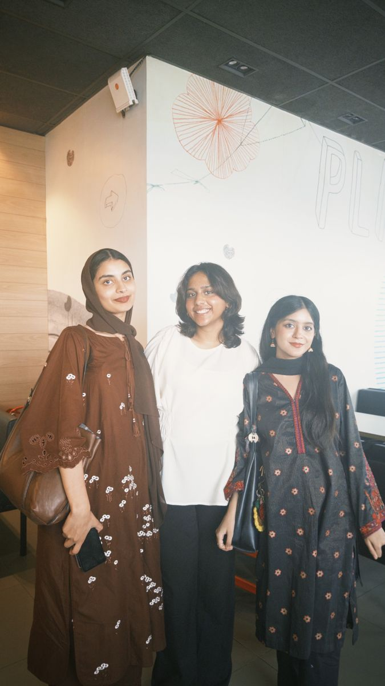

Hi, I'm Hamna Shah
Data Science Student — Data Mining, Statistical Modeling & Machine Learning
Data Science Student — Data Mining, Statistical Modeling & Machine Learning

I'm a Data Science undergraduate at the National University of Sciences and Technology (NUST), Islamabad, with hands-on experience in data mining, statistical modeling, and machine learning.
I love turning raw, messy data into clear stories and useful predictions — building everything from data pipelines to interactive dashboards using Python, SQL, and modern data science tools. Outside of coursework, I enjoy photography, swimming, and playing badminton and padel with friends.
NUST, Islamabad (2024 – Present)
High Achievers Award, FBISE 2023
Pakistan
Core tools for analytics & ML
National University of Sciences and Technology (NUST), Islamabad — Coursework: Database Systems, Advanced Statistics, Machine Learning, Artificial Intelligence, Data Structures & Algorithms, Introduction to Data Science, Computer Networks, Information Security, Computer Organization & Assembly Language, Object-Oriented Programming.
Army Public School and College System, Rawalpindi.